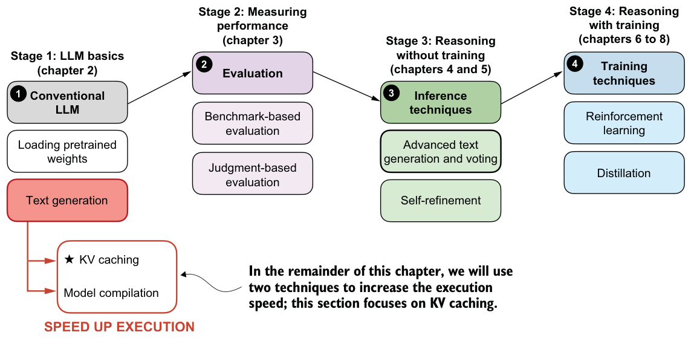
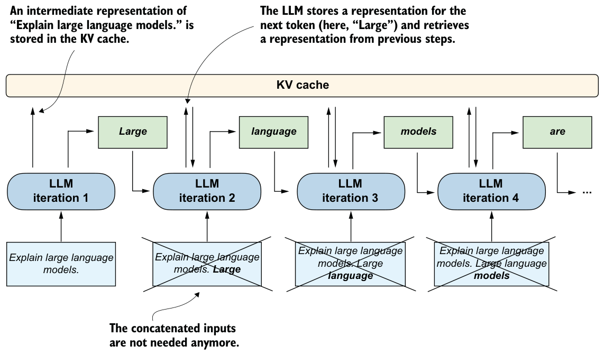

Text generation and inference terminology
generate_text_basic_stream function, we are not performing statistical inference. We are performing neural network inference, which is just the forward application of a trained model to produce the next-token distribution and select the next generated token from this distribution. 2.8Faster inference via KV caching
Now that we have a basic text generation function in place, we can turn our attention to what happens when we actually run it in practice. As you may have noticed, the text generation in the previous section can be a bit slow. That slowdown points us to a key concern: performance during inference.
When running inference with LLMs, which in this context means generating text from a prompt, runtime performance (efficiency) quickly becomes important, especially for long sequences. While the code in this book emphasizes clarity over speed, real-world systems often use engineering tricks to make inference more efficient.
This is useful for the later chapters as well, because evaluation and reasoning workflows often require generating many tokens or many candidate answers, so small speedups here compound quickly.
In the remaining two sections, we will cover two fundamental techniques, KV caching and model compilation, as shown in the overview in figure 2.15, to speed up the text generation.
As mentioned in figure 2.15, one engineering trick that increases the text generation speed is KV caching, where KV refers to the keys and values used in the model’s attention mechanism. If you are not familiar with these terms, that’s okay. The key idea is that we can cache certain intermediate values and reuse them at each step of text generation, as shown in figure 2.16, which helps speed up inference.
The key idea of KV caching, as shown in figure 2.16, is to store intermediate values computed in each iteration in a cache. Previously, each new token generated by the network was concatenated to the entire input sequence and fed back into the model repeatedly (indicated by crossed-out boxes in the diagram). This approach was inefficient because all tokens, except the newly generated one, remained identical in subsequent iterations. By using a KV cache, we avoid redundant computation and instead directly retrieve stored intermediate representations.


In rough terms, generating n new tokens without KV caching requires repeatedly recomputing work over an increasingly long sequence, which adds up to about O(n2) total decoding work. Here, O(n2) means the total work grows roughly with the square of the output length. With KV caching, after the initial pass, each new step processes only the newly added token, reducing this to roughly O(n), which means the total work grows approximately in direct proportion to the number of generated tokens.
As mentioned earlier, the nonreasoning focused LLM details like KV caching, which we used to improve the token generation speed, are outside the scope of this book, and they are not required for the topics covered later in this book. However, interested readers can find more information on the mechanics of KV caching in my freely available article: Understanding and Coding the KV Cache in LLMs from Scratch (https://magazine.sebastianraschka.com/p/coding-the-kv-cache-in-llms).
Following is a modified version of the generate_text_basic_stream function that incorporates a KV cache, which is almost identical to the basic text generation function in listing 2.2, except for the KV cache-related change highlighted via the comments:
from reasoning_from_scratch.qwen3 import KVCache
@torch.inference_mode()
def generate_text_basic_stream_cache(
model,
token_ids,
max_new_tokens,
eos_token_id=None
):
model.eval()
cache = KVCache(n_layers=model.cfg["n_layers"])
model.reset_kv_cache()
out = model(token_ids, cache=cache)[:, -1]
for _ in range(max_new_tokens):
next_token = torch.argmax(out, dim=-1, keepdim=True)
if (eos_token_id is not None
and torch.all(next_token == eos_token_id)):
break
yield next_token
out = model(next_token, cache=cache)[:, -1]The generate_text_basic_stream_cache function in listing 2.4 differs only slightly from the generate_text_basic_stream function in listing 2.2. The main difference is the introduction of a KVCache object.
During the first iteration, the model is given the full input token sequence as before, using model(token_ids, cache=cache). Behind the scenes, the KV cache stores the attention keys and values computed for all these input tokens, so they do not need to be recomputed in later iterations.
In the following iterations, we no longer need to pass the entire sequence. Instead, we only provide the next_token to the model using model(next_token, cache=cache). The model then retrieves the necessary context from the previously stored KV cache.
Let’s time this function to see whether it provides any performance benefits:
start_time = time.time()
generated_ids = []
for token in generate_text_basic_stream_cache(
model=model,
token_ids=input_token_ids_tensor,
max_new_tokens=max_new_tokens,
eos_token_id=tokenizer.eos_token_id
):
token_id = token.squeeze(0).tolist()
print(
tokenizer.decode(token_id),
end="",
flush=True
)
next_token_id = token.squeeze(0)
generated_ids.append(next_token_id)
end_time = time.time()
output_token_ids_tensor = torch.cat(generated_ids, dim=0)
generate_stats(output_token_ids_tensor, tokenizer, start_time, end_time)The output is
Time: 1.40 sec
29 tokens/sec
Large language models are artificial intelligence systems that can
understand, generate, and process human language, enabling them to
perform a wide range of tasks, from answering questions to writing
articles, and even creating creative content.As we can see, this approach is significantly faster, generating 29 tokens per second compared to just 5 tokens per second previously (measured on a Mac Mini M4 CPU). We also see that the generated text is the same as before, which is an important sanity check to ensure that the KV cache is implemented and used correctly.
In the next section, we will learn about another technique we can use to further improve the generation speed, which will come in handy when we evaluate the model in the upcoming chapters. Faster generation allows us to run more evaluations in less time and makes it easier to compare different models or settings efficiently.